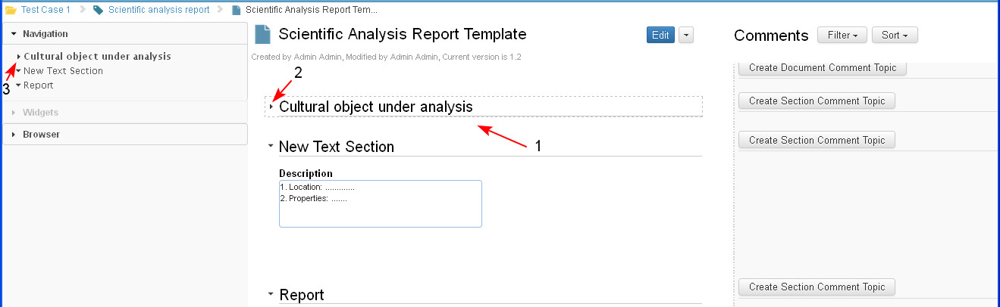

Each section in the document could be collapsed or expanded. The sections are created expanded by default.
The user could collapse/ expand each section in a document both in edit or in preview mode. The document in preview mode is displayed always with all sections expanded, and the user during working with the document could collapse some of them.
Collapse/ Expand section option is available in the iDoc navigation tree (1) and in the body pane next to each section title (2).
- The user selects the option "Collapse" (1 or 2) for an expanded section with content in it (3).
When the user clicks on collapse button in the document tree (1) - the tree is collapsed and the section text is also collapsed and all its subsections are collapsed (hidden) also.

- Only the section Title is visible for a collapsed section and its content is hidden (1). The user selects the option "Expand" for a collapsed section with content by clicking (2 or 3).
When the user clicks on expand button next to the title of a collapsed section (2), then its body is expanded and if there are subsections, then they are expanded also.
If the user clicks on expand button in the document tree (3) then the tree is expanded and the collapsed sections in the document are expanded also.

- The section is expanded and its content is displayed.